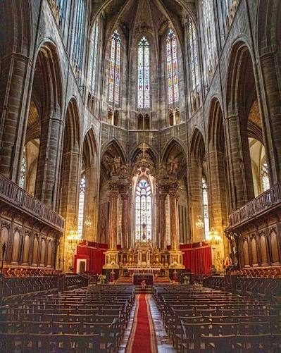

Cathédrale
Saint-Just


⟹ Édifices religieux & Patrimoine ⟸
Un site épiscopal vieux de plus de seize siècles. Narbonne est siège d’un évêché dès l’Antiquité tardive, dans une ville qui fut la capitale de la province romaine de Gaule narbonnaise. Plusieurs édifices cathédraux se sont succédé avant l’église actuelle. Une première basilique paléochrétienne est attestée au IVe siècle ; après sa destruction, l’évêque Rustique fait construire au Ve siècle un nouvel ensemble monumental. Au haut Moyen Âge, le groupe épiscopal évolue encore, notamment sous l’archevêque Théodard à la fin du IXe siècle.

Une métropole religieuse du Midi. L’évêché de Narbonne devient archevêché et exerce au Moyen Âge une autorité considérable sur plusieurs diocèses de la région. En 1097, l’archevêque reçoit le titre de primat, signe du prestige ecclésiastique de la ville. Les archevêques de Narbonne sont de grands seigneurs, étroitement associés à la vie politique du Languedoc ; leur palais, accolé à la cathédrale, forme avec elle l’un des ensembles épiscopaux les plus imposants de France.
1272 : le lancement d’un chantier royal. Au XIIIe siècle, l’ancienne cathédrale apparaît trop modeste au regard du rang de Narbonne. Le pape Clément IV, ancien archevêque de la ville, soutient le projet d’une nouvelle cathédrale « à l’imitation des nobles églises de France ». La première pierre de l’édifice gothique est posée en 1272. Le parti choisi appartient au gothique rayonnant : élévation vertigineuse, déambulatoire, chapelles rayonnantes et immenses fenêtres doivent manifester la puissance de l’Église narbonnaise.
Les maîtres d’œuvre et l’achèvement du chœur. Le premier architecte connu est Jean Deschamps, attesté en 1286. Dominique de Fauran lui succède en 1295, puis Jacques de Fauran poursuit l’œuvre. Le chœur est pratiquement achevé vers 1332 et les tours du transept s’élèvent jusqu’au milieu du XIVe siècle. Avec des voûtes culminant à environ 41 mètres, Saint-Just-et-Saint-Pasteur possède l’un des chœurs gothiques les plus élevés de France, témoignage spectaculaire de l’ambition initiale du chantier.
Pourquoi la cathédrale est-elle restée inachevée ? Pour construire le transept puis la nef selon le projet prévu, il aurait fallu entamer ou déplacer une partie du rempart antique et médiéval de Narbonne. À partir de 1345, les consuls de la ville s’y opposent, estimant les fortifications indispensables à la sécurité urbaine. Le conflit entre chapitre et pouvoir municipal s’inscrit dans un contexte particulièrement menaçant : guerre de Cent Ans, peste noire et raids militaires rendent toute diminution des défenses difficilement acceptable. Le chœur achevé reste donc comme la tête monumentale d’une cathédrale dont la nef médiévale ne sera jamais construite.
Guerre, peste et interruption durable. Le milieu du XIVe siècle cumule les crises. L’épidémie de peste noire de 1348 bouleverse la démographie et l’économie, tandis que la guerre de Cent Ans accroît les besoins de défense. En 1355, la chevauchée du Prince Noir ravage une partie du Languedoc et atteint la région narbonnaise. Dans ces conditions, le grand projet gothique perd sa priorité. Le cloître est finalement implanté contre les fortifications, créant cette articulation si particulière entre cathédrale, rempart et palais archiépiscopal.
Des tentatives d’achèvement à l’époque moderne. L’idée de compléter Saint-Just ne disparaît pourtant jamais totalement. La cathédrale est consacrée en 1587. Au début du XVIIIe siècle, entre 1708 et 1730, une tentative de construction d’un transept et d’une nef est engagée dans un langage gothique réinterprété, mais elle demeure elle aussi inaboutie. Ces reprises montrent combien l’inachèvement médiéval a continué à interroger les générations suivantes.
Révolution et XIXe siècle. La Révolution supprime l’ancien archidiocèse de Narbonne et met fin au rôle politique majeur des archevêques. L’édifice est ensuite protégé au titre des Monuments historiques dès la liste de 1840. Au XIXe siècle, Eugène Viollet-le-Duc étudie à son tour la possibilité d’un achèvement ; un projet est esquissé mais abandonné, notamment pour des raisons financières et parce qu’il aurait profondément transformé l’équilibre historique du site.
Un ensemble monumental exceptionnel. L’inachèvement est devenu l’une des principales singularités de Saint-Just-et-Saint-Pasteur. Le chœur, son déambulatoire et ses chapelles rayonnantes forment un chef-d’œuvre du gothique méridional d’inspiration septentrionale. La cathédrale est intimement liée au Palais des Archevêques, au cloître et aux vestiges des enceintes. Son trésor conserve des œuvres allant de l’époque carolingienne à l’époque moderne, rappelant la richesse de l’ancienne métropole ecclésiastique de Narbonne.
Un chœur aux dimensions exceptionnelles. Commencée en 1272, Saint-Just-et-Saint-Pasteur appartient au grand courant gothique du Midi tout en reprenant des solutions des cathédrales du nord de la France. Son chœur, seule grande partie médiévale achevée, est couvert de voûtes culminant à plus de 40 mètres.
Un monument volontairement inachevé. L'absence de nef donne à la cathédrale sa physionomie singulière. L'agrandissement aurait nécessité de modifier les fortifications de la ville ; les difficultés politiques, militaires et économiques du XIVe siècle ont ensuite contribué à l'abandon du projet initial.
Un trésor couvrant plus d'un millénaire. La salle du Trésor conserve notamment une plaque d'évangéliaire en ivoire sculptée du IXe siècle, une pyxide hispano-mauresque du XIe siècle, le pontifical enluminé de Pierre de la Jugie et la grande tapisserie flamande de la Création, vers 1500. Dans la cathédrale, le retable polychrome de Notre-Dame-de-Bethléem constitue également un chef-d'œuvre de la sculpture gothique du XIVe siècle.
La Ville de Narbonne documente séparément la cathédrale, le cloître et les collections du Trésor.
Sources : Ville de Narbonne — patrimoine · Trésor de la cathédralePalais des Archevêques : attenant à la cathédrale, il abrite les musées d'art et d'archéologie de Narbonne.
Les Halles de Narbonne : marché couvert du XIXe siècle, à quelques minutes à pied du centre historique.
Le canal de la Robine : voie d'eau classée UNESCO, bordée de quais ombragés.
La Via Domitia : vestiges de la voie romaine, visibles à ciel ouvert place de l'Hôtel de Ville.